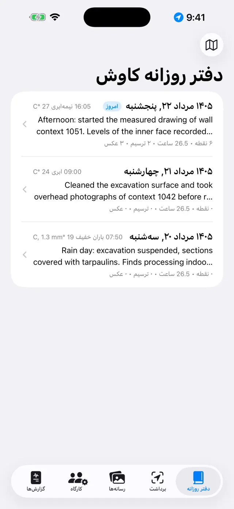
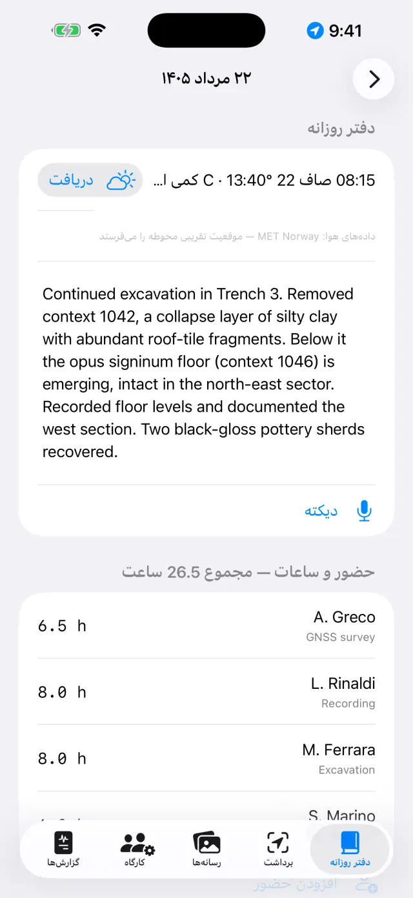
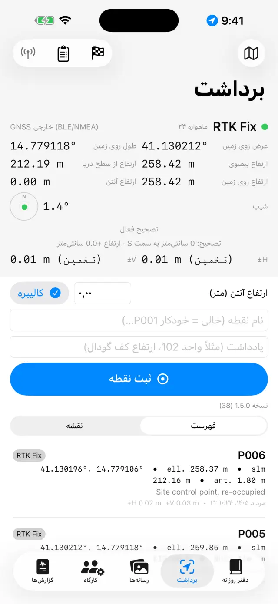
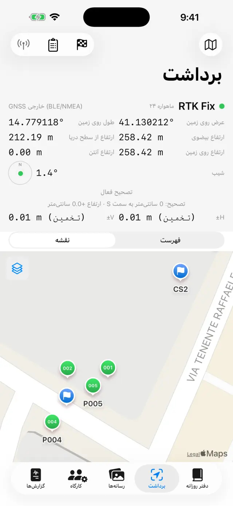
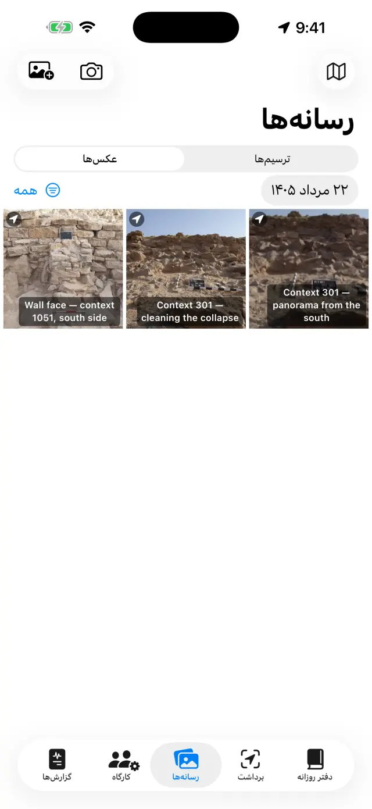
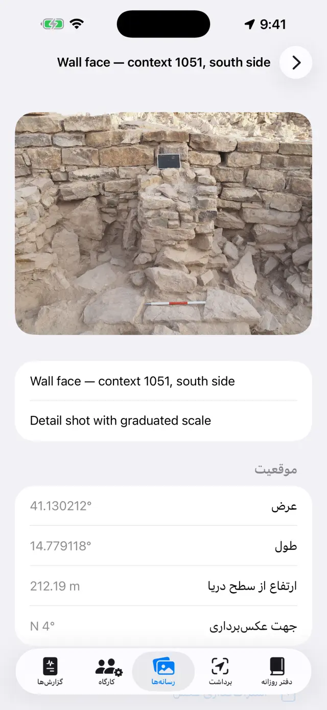
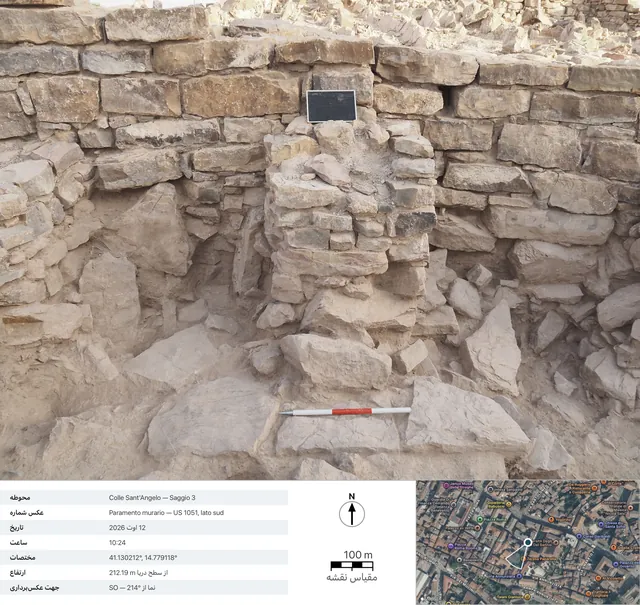
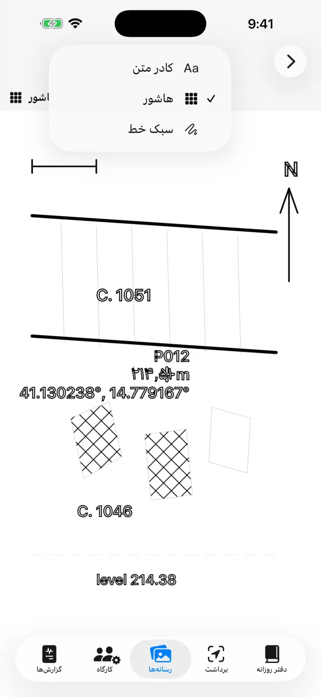
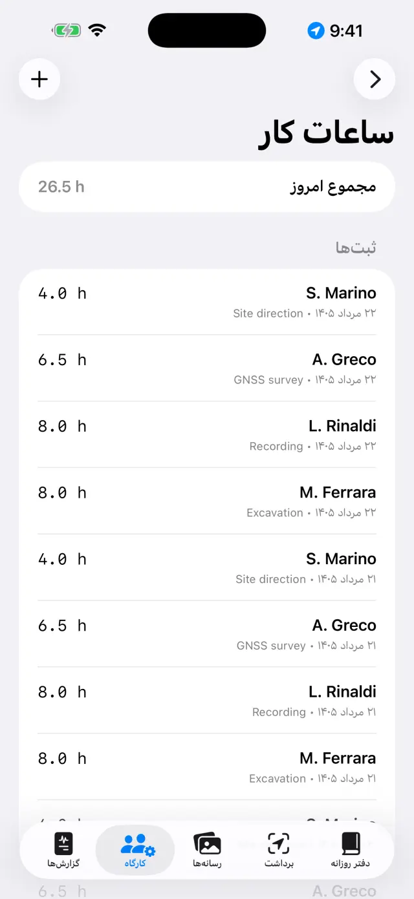
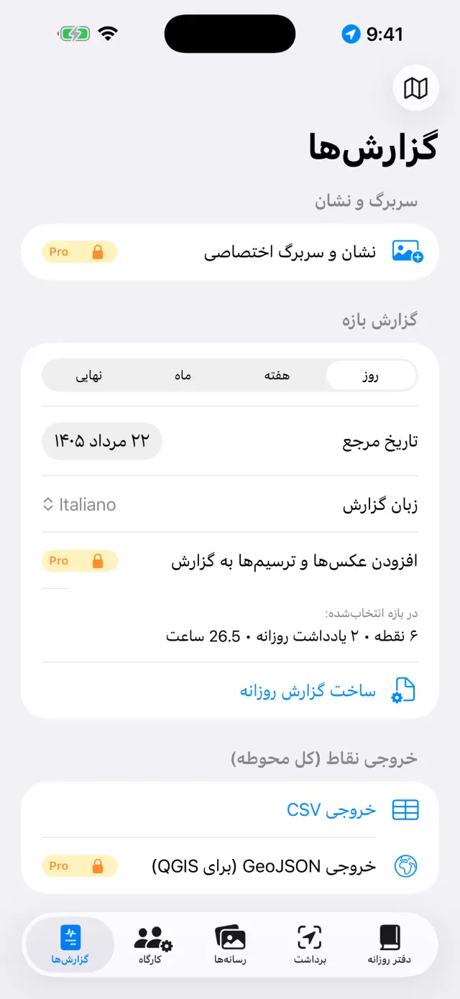

دفتر روزانه دیجیتال کاوش برای iPhone و iPad. 100% برونخط: دادههای شما روی دستگاه خودتان میماند.
در یک کلام
همهچیز بر یک ایده استوار است: هر روز کاوش یک صفحه است که
خودش پر میشود. شما هر چیز را همانجا که هست ثبت میکنید — یک نقطه GNSS در
برداشت، یک عکس در رسانهها، ساعات کار در کارگاه — و صفحه آن روز در
دفتر روزانه همه را خودبهخود گرد میآورد. آخر هفته یا پایان کاوش،
گزارشها خودشان از همین صفحهها ساخته میشوند.
یک روز معمولی
صبحصفحه روز را باز کنید، هوا و یادداشت روزانه را بنویسید (با دیکته گفتاری هم میشود)
حضوردر کارگاه ثبت کنید چه کسانی هستند و چند ساعت
برداشتنقاط GNSS را بگیرید؛ اگر با RTK کار میکنید یک نقطه مبنا را کنترل کنید
ترسیممقطع یا پلان را روی یک عکس بازترسیم کنید («کالک» دیجیتال)
غروباز زبانه گزارشها گزارش روزانه را بسازید: PDF آماده ارسال
نخستین گامها
در نخستین اجرا یک محوطه نمونه آماده است. برای ساختن محوطه خودتان، نام
محوطه را در بالا لمس کنید (نماد 🗺) ← محوطه جدید… و نامی
به آن بدهید (مثلاً «Colle Sant'Angelo — گمانه 3»).
نام محوطه فعال همیشه در بالا دیده میشود: همه زبانهها دادههای همان محوطه
را نشان میدهند. برای تعویض محوطه دوباره نام را لمس کنید: فهرست زیر عنوان
«محوطههای شما» است، و با تغییر نام محوطه… نامی را بدون از دست دادن
چیزی اصلاح میکنید.
اجازهها را هنگام درخواست بدهید: موقعیت (برای نقاط)،
دوربین (برای عکسها)، میکروفون (برای دیکته)،
بلوتوث (فقط اگر از گیرنده خارجی استفاده میکنید).
پنج زبانه
📓 دفتر روزانه
یک روز را لمس کنید تا صفحهاش باز شود: یادداشت روزانه، هوا، حضورها، نقاط،
عکسها و ترسیمهای آن روز همانجا هستند.
یادداشت را بنویسید یا دیکته را لمس کنید و حرف بزنید: تبدیل گفتار
به نوشتار روی خود دستگاه انجام میشود و بدون شبکه هم کار میکند.
هوا را میشود دستی نوشت (مثلاً «صاف، 28 °C، باد ملایم») یا با
دریافت گرفت؛ این دکمه شرایط همان لحظه را از سازمان هواشناسی نروژ
میپرسد. به شبکه نیاز دارد و فقط برای روز جاری کار میکند: هوای دیروز دیگر
بازیافتنی نیست. یک لمس دوم در بعدازظهر یک اندازهگیری دیگر میافزاید. آنچه با
دست مینویسید همیشه مقدم است.
هنگام دریافت، تنها موقعیت منطقه گردشده تا حدود 11 متر از دستگاه بیرون
میرود، و در گزارشها آن سطر به زبان گزارش میآید.

فهرست روزهای کاوش

صفحه یک روز
📍 برداشت
پانل بالا موقعیت زنده را نشان میدهد: مختصات، ارتفاعها، دقت و نوع Fix
(GPS / RTK Float / RTK Fix).
اگر از میله استفاده میکنید، ارتفاع آنتن (متر) را وارد کنید:
ارتفاع نقطه خودبهخود به سطح زمین کاهش مییابد.
ثبت نقطه را لمس کنید. نام پشت سر هم پیش میرود (P001، P002…) اما
میتوانید نام خودتان را بنویسید (مثلاً «واحد 102 — ارتفاع کف») و یادداشتی
بیفزایید.
برای دیدن نقاط در جای خودشان میان فهرست و نقشه
جابهجا شوید؛ از نقشه میتوانید کاداستر یا سرویس WMS دیگری را روشن کنید.
نقاط مبنا (🏁) بخش خودشان را دارند: از CSV وارد کنید یا بسازید، سپس
کنترل زنده را باز کنید و پیش از آغاز برداشت، با نوک
میله روی میخ، اختلافهای Δشمال/Δشرق/Δارتفاع را وارسی کنید.
زیر دفترهای ترازیابی دفتر میدانی ترازیاب نوری قرار دارد: ایستگاهها،
قرائتهای عقب و جلو، ارتفاعهای محاسبهشده از یک نقطه مبنای آغازین، همراه با
کنترل بست. نقاط ترازیابیشده با ارتفاع خودشان وارد محوطه میشوند، درست مانند
نقاط GNSS.
زیر پانل ضبطهای NMEA هست: جریان خام گیرنده خارجی
PRO خودبهخود در فایل مینشیند — ضبط با روشنکردن آنتن
آغاز میشود و با خاموشکردن آن بسته میشود، بیآنکه لازم باشد به یادش باشید. به
کار میآید تا روزی مشکوک را دوباره بخوانید یا داده خام را به کسی که پسپردازش
میکند بسپارید. فایلها به اشتراک گذاشته و حذف میشوند، جز فایل ضبطی که در جریان
است؛ فهرست با گیرنده خاموش هم باز میشود، تا فایلهای دیروز در دسترس
بمانند.

پانل GNSS در برداشت

نقاط و نقاط مبنا روی نقشه
هر نقطه هر دو ارتفاع را ذخیره میکند: بیضوی و
ارتفاع از سطح دریا. با GPS داخلی تلفن، ارتفاع از سطح دریا ممکن است در دسترس
نباشد: به گیرنده خارجی نیاز است (پایینتر را ببینید).
📷 رسانهها
با دکمه دوربین عکس بگیرید یا از کتابخانه عکس وارد کنید.
عکسها نام پشت سر هم میگیرند (F001، F002…) و با آخرین موقعیت GNSS در
دسترس زمینمرجع میشوند.
هنگام عکسبرداری برنامه جهت عکسبرداری را هم از قطبنما
ثبت میکند: در جزئیات عکس و در گزارشها میخوانید «نما از SO — 214°»، و برای
عکسهای قائم از بالا (پلان، کف یک واحد) عبارت تصویر قائم همراه با جهت لبه
بالایی میآید. اگر قطبنما مختل باشد، برنامه آن را میگوید.
برای عنوان و یادداشت روی یک عکس لمس کنید (مثلاً «واحد 102 از شمال»).
اشتراکگذاری شناسنامه عکسPROشناسنامه عکسی مستندنگاری را میسازد: عکس با دادههای
عکسبرداری در پایین آن (محوطه، شماره، تاریخ و ساعت، مختصات، ارتفاع، جهت)، یک
نمای ماهوارهای با نشانگر و مخروط دید، خطکش مقیاس نقشه و پیکان شمال. نقشه به
شبکه نیاز دارد: بدون شبکه هم شناسنامه بیرون میآید، با پانل دادههای
گستردهتر.

گالری عکسها

جزئیات یک عکس: مختصات، ارتفاع و جهت عکسبرداری

شناسنامه خروجی: دادههای عکسبرداری، نمای ماهوارهای با مخروط دید، خطکش مقیاس نقشه و پیکان شمال
✏️ ترسیمها (در رسانهها)
یک تخته نو بسازید و یکی از عکسهای محوطه را زمینه آن کنید: این همان «کالک»
دیجیتال شماست. یک ترسیم میتواند در چند روز ادامه یابد. میشود عکس را هم
نگذاشت: روی کالک سفید هم به همان شکل ترسیم میکنید.
لایهها، برشها و سنگها را با انگشت یا با Apple Pencil بازترسیم کنید.
برای بزرگنمایی دو انگشت را باز کنید (تا 6×؛ دو ضربه با دو
انگشت برای بازگشت به 1×). اگر عکس خط شما را میپوشاند، از منوی دوربین
کدری زمینه… را برگزینید و آن را هرجا لازم است بیاورید، از 5% تا
100%: عکس کمرنگ میشود، نه ترسیم. این انتخاب روی تخته میماند و در PDF، DOCX،
PNG و خروجی با راهنما هم اعتبار دارد.
باقی همهچیز زیر ابزارها است (آچار روی نوار)، که فهرست شش
حالت است: کادر متن، بازترسیمPRO، مقیاس عکس،
نقطه ارتفاعدار، هاشور و
سبک خط. هر بار تنها یکی روشن میماند:
تیک میگوید کدام، و تا وقتی روشن است انگشت ترسیم نمیکند بلکه همان ابزار را
میراند — برای بازگشت به ترسیم، گزینه تیکخورده را دوباره لمس کنید. آن سه
گزینهای که روی تصویر کار میکنند (بازترسیم، مقیاس، نقطه ارتفاعدار) تنها وقتی
پیدا میشوند که عکس زمینهای در کار باشد.
با کادر متن برچسبها را میگذارید (مثلاً «واحد 1002»):
جابهجا میشوند، با دو انگشت اندازهشان عوض میشود و چهار قلم برای انتخاب
دارند.
بازترسیمPRO خط پیرامونی چیزی را که لمس
میکنید (یک سنگ، مرز یک لایه) میشناسد و به خط تبدیل میکند: رنگ، ضخامت و سبک
خط بدون خروج از این حالت عوض میشود، و خطوط پیرامونی بهجای پلهپله، صاف بیرون
میآیند. همهچیز روی دستگاه انجام میشود، بدون شبکه.
درون بازترسیم، بازترسیم همهPRO خودش
تمام عکس را دور میزند. در برگه آغاز، ظاهر کار را تعیین میکنید —
فقط خطوط پیرامونی، یا یک هاشور و شاید یک لایهٔ رنگ —
و شروع را میزنید: نوار میگوید کار به کجا رسیده، و چند ده ثانیه
طول میکشد. آنچه پدیدار میشود یک پیشنمایش است، نه ترسیم: یک
لمس درون یک شکل آن را کنار میگذارد و لمسی دیگر بازش میگرداند (میان شکلهای
رویهم، کوچکترینِ زیر انگشت برنده است)، گذر دقیق تنها جایی را
دوباره میگردد که چیزی نیافته بود، و اعمال آنچه را مانده روی
ترسیم مینشاند. تا وقتی اعمال نکنید، تخته دستنخورده است.
با ابزار مقیاس عکس (خطکش) دو سر یک اندازه معلوم را لمس
میکنید — بخشی از میله مدرج — و فاصله واقعی را مینویسید: عکس مقیاس میگیرد و از
آن پس خروجیها به متر سخن میگویند.
با نقطه ارتفاعدار علامت بهعلاوه یک نقطه GNSS محوطه (یا نقطهای
دستی) را روی عکس میگذارید: نام، ارتفاع و مختصات در برچسبی کشیدنی با خط راهنما
پیدا میشوند. وقتی مقادیر ترسیم را میپوشانند، روی برچسب انتخابشده دو انگشت را
باز و بسته کنید تا کوچک یا بزرگش کنید.
هاشور شکلها را پر میکند: درون یک شکل بسته
لمس میکنید و همانجا پر میشود. ده هاشور قراردادی هست —
بنایی / سنگ، آجر،
ملات / اندود، رس، سیلت،
ماسه، شن، زغال / خاکستر،
سنگ بستر، چوب — و
لایهٔ رنگ (یک رنگ با کدری خودش)، تنها یا با هم. اگر شکلی درون
شکل دیگری باشد، کوچکترینِ زیر انگشت برنده است؛
حذف پرکردن آن را پاک میکند. عکس لازم نیست: پرکردن روی
شکلهای ترسیمشده کار میکند، پس روی کالک سفید هم راه میافتد.
سبک خط خطی را که از پیش ترسیم شده
میآراید: آن را لمس میکنید و میان پیوسته،
خطچین، نقطهچین و
خط و نقطه برمیگزینید و ضخامت را تنظیم میکنید.
ترسیم با این سبک کاری میکند که خطهای بعدی از همان آغاز
آراسته زاده شوند؛ حذف سبک خط را به حالت پُر بازمیگرداند.
این جلوه صفحهنمایش نیست: خطتیرهها پارهخطهای واقعیاند و در PDF، DOCX، PNG،
SVG و DXF هم چنین میمانند.
خروجی با راهنماPRO: تصویر با نوار سفیدی
در پایین بیرون میآید — خطکش متری (اگر مقیاس موجود باشد)، پیکان شمال برای
عکسهای قائم از بالا، و «نما از» برای عکسهای روبهرو.
خروجی برداریPRO: SVG برای ترسیم، یا
DXF برای GIS. با دستکم دو نقطه ارتفاعدار دارای مختصات روی
عکسی که قائم از بالا گرفته شده، DXF زمینمرجع در UTM بیرون
میآید و در QGIS خودش سر جای واقعیاش مینشیند؛ تنها با مقیاس، خروجی به متر
محلی است؛ بدون هیچکدام، برنامه آن را میگوید و فایل بیواحد نمیسازد. SVG در
کدری استثناست: عکس اصلی را همانطور که هست درون خود جا میدهد، پس زمینه
کمرنگشده آنجا با تمام قوت بیرون میآید.
وقتی کارتان تمام شد عکس را پنهان کنید: ترسیم تمیز میماند، آماده
گزارش.

کالک دیجیتال
👷 کارگاه
حضور آن روز را ثبت کنید: نام، وظیفه و ساعات هر کس.
سیاهه تجهیزات و اینکه هرکدام به چه کسی واگذار شده را نگه دارید.

حضور و ساعات
📄 گزارشها
نوع را انتخاب کنید: روزانه (رایگان، با واترمارک)،
هفتگی، ماهانه یا نهایی با
پیوستهای کامل PRO.
زبان گزارش را از میان هفده زبان انتخاب کنید؛ مستقل از زبان
برنامه است: گزارش میتواند به آلمانی بیرون بیاید حتی اگر برنامه را به فارسی به
کار ببرید.
PDF را بسازید، یا DOCX با نشان و عکس PRO، CSV نقاط
و GeoJSON برای QGIS PRO بگیرید.
وقتی افزودن عکسها به گزارش روشن است میتوانید شناسنامه عکس بهجای خود
عکسPRO را برگزینید: هر عکس همچون یک شناسنامه
مستندنگاری کامل با دادهها و نقشه، به زبان گزارش، وارد PDF و DOCX میشود.

ساخت گزارشها
گیرنده GNSS خارجی و NTRIP
با یک گیرنده خارجی (آنتن با دقت سانتیمتری) برنامه به دقت RTK میرسد. GPS
داخلی همیشه بهعنوان جایگزین در دسترس میماند.
گیرنده را روشن کنید و بلوتوث تلفن را فعال کنید.
در برداشت منبع موقعیت را انتخاب کنید: GNSS خارجی
(BLE/NMEA)PRO و گیرندهتان را از فهرست برگزینید.
گیرندههای MFi (رایگان) و گیرندههایی که NMEA را روی شبکه پخش میکنند هم
پشتیبانی میشوند.
برای تصحیحات RTK NTRIP را تنظیم کنید: نشانی کستر، درگاه،
نقطه اتصال، کاربر و گذرواژه (در زنجیرهکلید دستگاه میمانند). برنامه موقعیت را
به کستر میفرستد و تصحیحات را میگیرد.
منتظر بمانید تا به RTK Fix برسد: دقت سانتیمتری. پیش از
شروع روی یک نقطه مبنا کنترل کنید.
آنجا که تلفن آنتن نمیدهد، راهی بدون اینترنت هم
هست: یک بیس که روی نقطهای معلوم کاشته شده و یک روور، تصحیحات را با رادیوی
LoRa میان خود رد و بدل میکنند، بی کستر و بی سیمکارت (کیت RTK
از DFRobot با پل ESP32). برای برنامه چیزی عوض نمیشود — از گیرنده یک NMEA از پیش
تصحیحشده میگیرد — و سوارکردن پل جداگانه، در README خودش مستند شده است: اینجا
راهنمای برنامه میماند، نه دفترچه میانافزار.
پشتیبانگیری و تبادل
از منوی محوطه خروجی محوطه (.zip) را لمس کنید: همهچیز درون آن
است — دفتر روزانه، نقاط، عکسها، ترسیمها، ساعات، نقاط مبنا.
فایل ZIP را هرجا خواستید نگه دارید (Files، Drive، ایمیل…). این پشتیبان
شماست: برنامه ابر ندارد، از روی انتخاب.
ورود محوطه (.zip)… محوطه را روی دستگاهی دیگر بازمیسازد، حتی
میان iPhone و Android.
⚠️ حذف محوطه… محوطه را با همه محتوایش پاک میکند و
برگشتپذیر نیست: اگر تردید دارید نخست یک ZIP بگیرید.
رایگان و Pro
رایگان
Pro
محوطهها
1
نامحدود
GNSS
GPS داخلی، گیرندههای MFi
+ BLE/NMEA، NTRIP
گزارشها
روزانه با واترمارک
همه، بدون واترمارک
خروجی
PDF، CSV
+ DOCX با نشان و عکس، GeoJSON
ترسیمها
کالک، بزرگنمایی، متن، مقیاس، نقاط ارتفاعدار، هاشورها، سبکهای خط، کدری زمینه
+ خروجی با راهنما، SVG/DXF
بازترسیم خودکار
—
لمسی و «بازترسیم همه»
ضبطهای NMEA
بازخوانی و اشتراکگذاری فایلها
خود ضبط (به آنتن خارجی نیاز دارد)
دفتر ترازیابی
✓
✓
شناسنامه عکس
—
اشتراکگذاری و شناسنامه در گزارشها
دیکته صوتی
✓
✓
زبانهای گزارش
17
17
Pro اشتراکی ماهانه یا سالانه با تمدید خودکار است، یا یک خرید یکباره
مادامالعمر. از تنظیمات Apple ID مدیریت و لغو میشود.
رفع اشکال
گیرنده بلوتوث پیدا نمیشود یا وصل نمیشود
به ترتیب بررسی کنید:
گیرنده روشن است و از پیش به برنامه یا تلفن دیگری وصل نیست؛
بلوتوث سیستم فعال است و برنامه اجازه بلوتوث دارد (تنظیمات ← Giornale di
Scavo)؛
منبعی که در برداشت انتخاب شده GNSS خارجی (BLE/NMEA) است؛
گیرنده را خاموش و روشن کنید، سپس جستوجو را دوباره انجام دهید.
هرگز به RTK Fix نمیرسم
یک اتصال فعال NTRIP لازم است: کستر، نقطه اتصال و اطلاعات ورود را بررسی
کنید.
پوشش داده تلفن را بررسی کنید: تصحیحات از اینترنت میآیند.
آسمان باز: درختان انبوه و دیوارهای نزدیک سیگنال را خراب میکنند. با پوشش
ضعیف ممکن است در RTK Float (دسیمتری) بمانید.
یک نقطه اتصال نزدیک (< 30–40 کیلومتر) یا یک شبکه VRS برگزینید.
NTRIP وصل نمیشود
نشانی و درگاه (اغلب 2101) و وجود نقطه اتصال را بررسی کنید: بسیاری از
کسترها فهرست را منتشر میکنند (sourcetable).
کاربر یا گذرواژه نادرست خطای 401/403 میدهد: اطلاعات ورود را دوباره وارسی
کنید.
برخی شبکهها ارسال موقعیت را میخواهند (GGA): برنامه این کار را خودش
میکند، اما گیرنده باید از پیش یک Fix داشته باشد.
ارتفاع از سطح دریا خالی یا صفر است
GPS داخلی تلفنها تنها ارتفاع بیضوی میدهد. ارتفاع از سطح دریا از جمله GGA
یک گیرنده خارجی میآید. بدون گیرنده، نقاط دستکم ارتفاع بیضوی را ذخیره
میکنند.
دیکته کار نمیکند
اجازه میکروفون و تشخیص گفتار را در تنظیمات بررسی کنید.
تبدیل گفتار به نوشتار روی دستگاه است: بار نخست ممکن است سیستم ناچار شود
مدل زبان را دانلود کند (یک بار شبکه لازم است، سپس برونخط کار میکند).
با جملههای کوتاه حرف بزنید؛ متن به انتهای یادداشت روزانه افزوده
میشود.
نقشه کاداستر (WMS) دیده نمیشود
برنامه برونخط است، اما لایههای WMS سرویسهای وباند: به اتصال و به سرویسی
فعال نیاز دارند. کاداستر ایتالیا از پیش تنظیم شده است؛ برای کشورهای دیگر نشانی
سرویس WMS ملی را وارد کنید (باید از EPSG:3857 پشتیبانی کند). بیرون از پوشش
داده، نقشه پایه و نقاط دیده میشوند.
عکسها مختصات ندارند
عکس موقعیتش را از آخرین Fix دریافتی GNSS میگیرد: نخست برداشت را باز کنید و
بگذارید موقعیت قفل شود، بعد عکس بگیرید. اگر اجازه موقعیت رد شده باشد، عکسها
بدون مختصات ذخیره میشوند.
در گزارش عکس یا نشان کم است
عکس در گزارشها، نشان و سربرگ اختصاصی بخشی از Pro هستند و برای DOCX و PDF
اعتبار دارند. در گزارش روزانه رایگان واترمارک هست و عکسها نمیآیند.
به اشتباه یک محوطه را حذف کردم
حذف قطعی است: دادهها بازیافتنی نیستند (ابری در کار نیست). اگر فایل ZIP
گرفتهشدهای از پیش دارید، آن را وارد کنید تا محوطه به همان تاریخ برگردد.
توصیه: پایان هر روز یک ZIP بگیرید.
Pro را خریدم اما هنوز قفل است
در صفحه Pro بازیابی خریدها را با همان Apple ID خرید لمس کنید. اگر
دستگاه عوض کردهاید، بازیابی اشتراک یا مجوز مادامالعمر را برمیگرداند.
«دریافت» خاموش است، یا «وضع هوا در دسترس نیست» میگوید
اگر دکمه خاموش است در صفحه یک روز گذشته هستید: وضع هوا فقط برای روز جاری
دریافت میشود؛
اگر «وضع هوا در دسترس نیست» میآید شبکه نیست، یا محوطه هنوز نقطه GNSS
ندارد تا موقعیت از آن گرفته شود — یک نقطه ثبت کنید و دوباره تلاش کنید.
شناسنامه عکس بدون نقشه بیرون میآید
نمای ماهوارهای از Apple میآید و به شبکه نیاز دارد: برنامه تا 15 ثانیه صبر
میکند، سپس شناسنامه را بدون نقشه میسازد (دادهها منتظر شبکه نمیمانند). روی
شبکههای کند کارگاهی ممکن است تمام این انتظار لازم شود: زیر Wi-Fi دوباره تلاش
کنید. بدون برچسب جغرافیایی روی عکس، نقشهای در کار نیست.
«بازترسیم همه» چیزی نمییابد، یا زیادی مییابد
این دور روی عکس زمینه کار میکند: بدون عکس این فرمان نیست، و تا وقتی
«در حال آمادهسازی عکس…» خوانده میشود مدل هنوز آماده نیست — صبر کنید؛
اگر شکلها کماند، گذر دقیق را بزنید: تنها جایی را که دور
نخست چیزی ندیده بود با شبکهای تنگتر دوباره میگردد و آنچه مییابد میافزاید،
بیآنکه آنچه را کنار گذاشتهاید بازگرداند؛
اگر زیادیاند، همه را اعمال نکنید: در پیشنمایش شکلهای اضافی را یکییکی لمس
کنید تا کنار بروند، سپس اعمال. آنچه کنار میگذارید روی ترسیم
نمینشیند؛
عکسهای تخت — کنتراست کم، نور نیمروز، خاکی یکدست — به اقتضای طبیعتشان خط
پیرامونی کم میدهند: آنجا بازترسیم تکلمسی بهتر است، که میداند شما کجا را نگاه
میکنید؛
اگر پر از شکلهای ریز ماند، با فقط خطوط پیرامونی دوباره تلاش کنید:
بهتر خوانده میشوند، و هاشور را همیشه میشود بعداً با دست کشید.
خط تن به آراستن نمیدهد
لمس، نزدیکترین خط را در شعاع یک سر انگشت میجوید: اگر خط نازک است یا خطها
انبوهاند، بزرگنمایی کنید و دقیقتر، درست روی جوهر، لمس
کنید؛
تنها خطها آراسته میشوند. پرکردنها، کادرهای متن و
علامتهای بهعلاوهٔ نقاط ارتفاعدار خط نیستند و زیر انگشت پاسخ نمیدهند؛
اگر «سبک این خط قابل تغییر نیست» آمد، میان خطهایی که لمس گرد
آورده یکی هست که خط نیست: نقطهای که لمسی بیحرکت بر جای گذاشته، یا خطی که از
بایگانی واردشده خراب رسیده است. نقطه را پاک کنید و دوباره تلاش کنید، یا خط را
جایی دور از آن لمس کنید. یک نقطه بهتنهایی اصلاً آراسته نمیشود: با یک نقطه
نمیشود خطچین ساخت؛
اگر میان لمس و اعمال کاری را برگردانده یا چیز دیگری ترسیم
کردهاید، انتخاب خودبهخود از هم میپاشد تا خط نادرست آراسته نشود: دوباره خط را
لمس کنید و از نو تلاش کنید.
وقتی درون شکل لمس میکنم هاشور نمیآید
شکل باید بسته باشد، و با یک خط تنها بسته
شده باشد: بیآنکه انگشت را بردارید آغاز کنید و تقریباً به همان نقطه بازگردید
(چند میلیمتر اختلاف بخشوده است). دو خطی که سرهایشان به هم میرسند، دو خط باز
میمانند، و پرکردن یک تخته آنسوی مرزی که کسی ترسیم نکرده، بدتر از پر نکردن آن
میبود؛
خطوط پیرامونی که بازترسیم میسازد بنا بر ساختشان بستهاند:
آنها همیشه پر میشوند؛
اگر شکلها تودرتو باشند، لمس کوچکترین شکلی را میگیرد که
آن را دربر دارد — برای پرکردن شکل بزرگ، جایی را لمس کنید که بیرون از کوچکها
بماند؛
درون شکل لمس کردهاید یا روی لبهاش؟ هدف، سطح است، نه خط.
DXF رد میشود، یا در GIS «نزدیک مبدأ» باز میشود
برای DXF زمینمرجع یک عکس قائم از بالا با دوربین خود
برنامه و دستکم دو نقطه ارتفاعدار دارای مختصات با فاصله خوب
روی عکس لازم است؛
تنها با مقیاس میله مدرج، DXF به متر محلی بیرون میآید: این
درست است، اما GIS آن را نزدیک مبدأ نشان میدهد — برنامه از پیش به شما
میگوید؛
بی مقیاس و بی نقطه، خروجی رد میشود: یک DXF بیواحد در هیچ GIS بهطور
معنادار خواندنی نخواهد بود.
زمینه را کمرنگ کردم، اما SVG با عکس تمامقوت بیرون میآید
چنین است و چنین میماند: SVG فایل اصلی عکس را با خود میبرد،
نه رونوشتی کمرنگ از آن، و روشنکردنش یعنی فشردهسازی دوباره — یعنی بدترکردنش
برای همه کسانی که SVG را برای کار کردن روی آن باز میکنند.
کدری زمینه… در ویرایشگر، در PDF، در DOCX، در PNG و در
خروجی با راهنما اعتبار دارد. اگر برداری بیعکس میخواهید،
SVG — فقط ترسیم را برگزینید؛ اگر عکس کمرنگشده میخواهید،
PNG بگیرید یا از راه گزارش بروید.
پیکان شمال در خروجی با راهنما نمیآید
پیکان فقط برای عکسهای قائم از بالا با دوربین خود برنامه
پیدا میشود، چون آن دوربین آزیموت را در لحظه عکسبرداری ثبت میکند. برای
عکسهای روبهرو نوشته «نما از …» میآید (پیکان شمال روی صفحه یک نما دروغی
هندسی میبود)؛ و روی عکسهای واردشده از کتابخانه هیچکدام نیست، چون دادههای
عکسبرداری وجود ندارد.